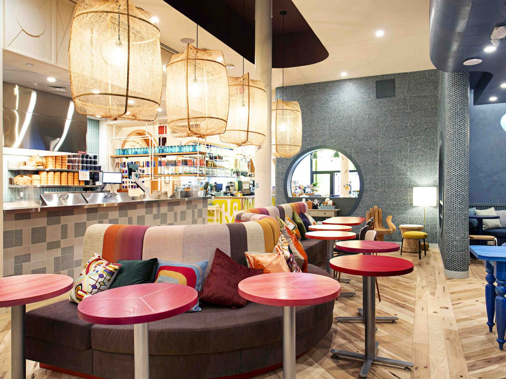
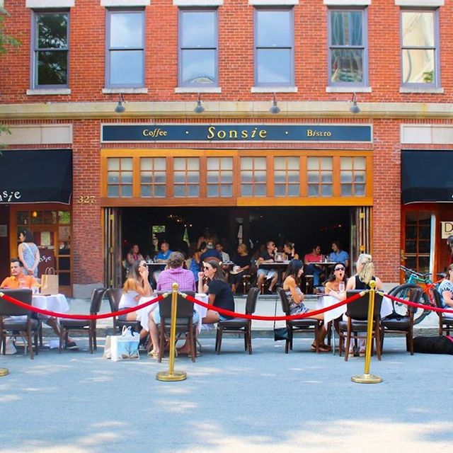
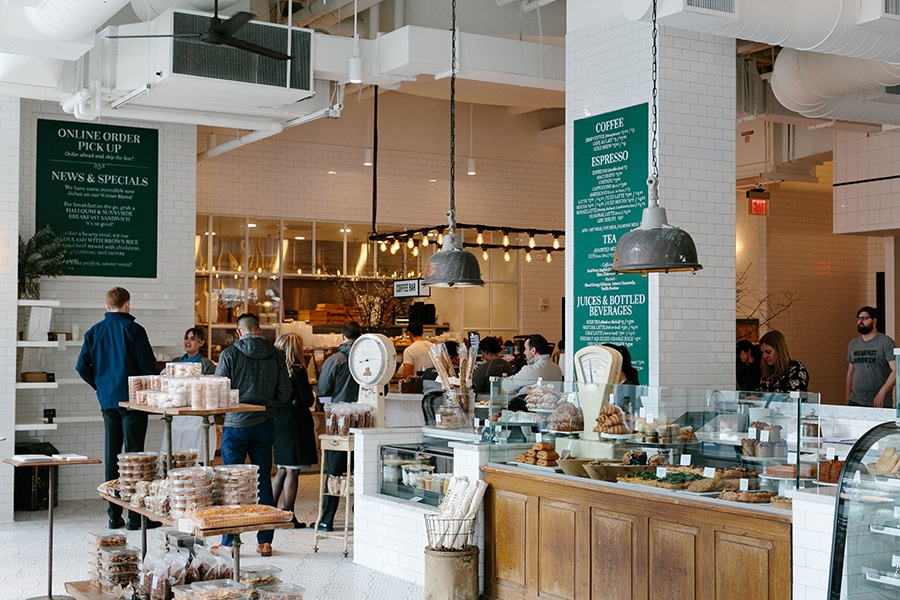
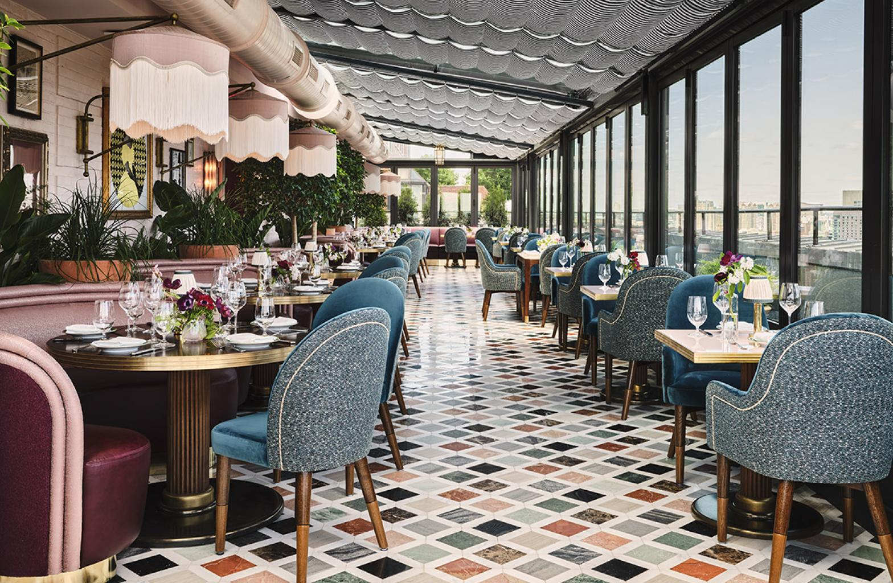
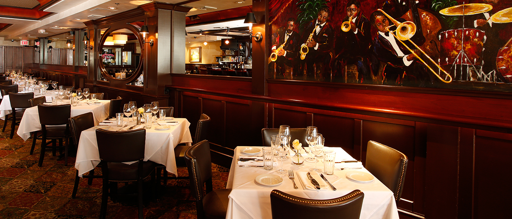
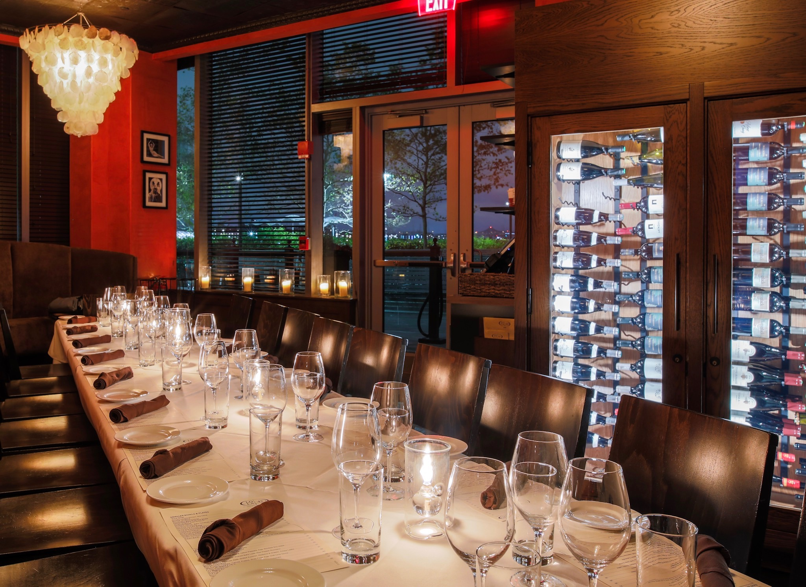

Life Alive: Best known for their delicious acai bowls

Sonsie: Located in the heart of Boston with scrumptious brunch food

Tatte Bakery and Cafe: Located all over Boston and known for their giant
breakfast selection and delicious pastries

Contessa: Deliicious Italian ocated in the Newbury Hotel and created
boston the Major Food Group, owners of many other famous restaurants

Abe and Louis: Incredible steak house located just off Newbury Street

Lola 42: Incredible sushi restaurant located in Seaport with gorgeous
water views
